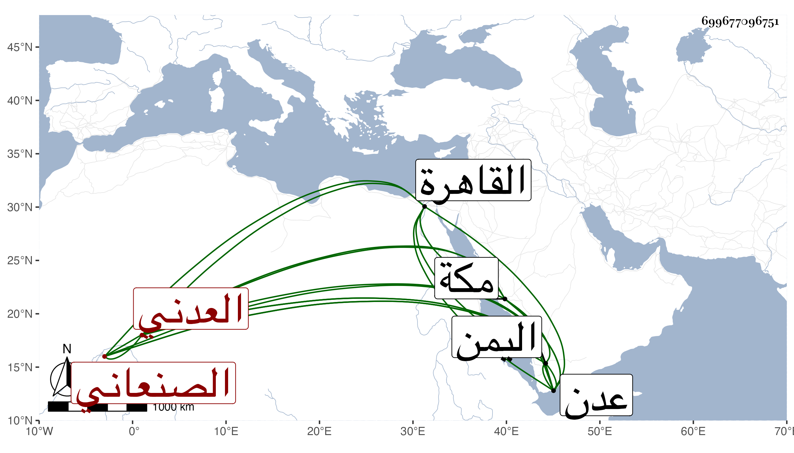

0902Sakhawi.DawLamic.ITO20230111-ara1.EIS1600.699677096751
Biography ID: 699677096751
783
موسى بن علي بن يحيى بن جميع الشرف بن النور الصنعاني الأصل العدني أخو الوجيه عبد الرحمن الماضي . ذكره شيخنا في إنبائه وقال : استقر في وظيفة أبيه بعدن وهي الرياسة على التجار والمتجر السلطاني ، وكان حاذقا عارفا بالمباشرة والكتابة فصيحا لسنا ولكن لم يكن صينا ، وقد قدم القاهرة في وسط دولة الناصر من نحو ثلاثين سنة أو أكثر . مات في شعبان سنة اثنتين وأربعين باليمن وقال المقريزي أنه كان حاذقا عارفا بالأمور كثير الاستحضار للنوادر حسن المعاشرة بعيد الغور جاز الخمسين وختم به بيت ابن جميع وقال غيره إنه كان كثير الاستحضار عنده سياسة وتدبير ومولده قبل التسعين وسبعمائة بعدن وقدم مكة فانقطع بها مدة .
